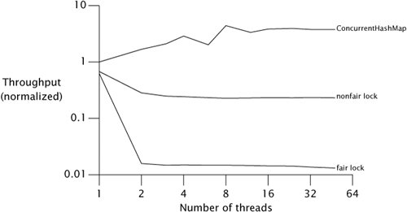

{% include JB/setup %}
{% raw %}
<div>


<a href="21021536.html" class="calibre2"></a><a name="ch13lev1sec3" class="calibre18" id="ch13lev1sec3"></a>
<h3 id="title-IDAVPPZW" class="docSection1Title">13.3. Fairness</h3>
<p class="docText1">The <tt class="calibre25">ReentrantLock</tt> constructor offers a choice of two <span class="docEmphasis">fairness</span> options: create a <span class="docEmphasis">nonfair</span> lock (the default) or a <span class="docEmphasis">fair</span> lock. Threads acquire a fair lock in the order in which they requested it, whereas a nonfair lock permits <span class="docEmphasis">barging</span>: threads requesting a lock can jump ahead of the queue of waiting threads if the lock happens to be available when it is requested. (<tt class="calibre25">Semaphore</tt> also offers the choice of fair or nonfair acquisition ordering.) Nonfair <tt class="calibre25">ReentrantLock</tt>s do not go out of their way to promote bargingthey simply don't prevent a thread from barging if it shows up at the right time. With a fair lock, a newly requesting thread is queued if the lock is held by another thread or if threads are queued waiting for the lock; with a nonfair lock, the thread is queued only if the lock is currently held.<sup class="docFootnote"><a class="calibre2" href="#ch13fn04">[4]</a></sup></p><blockquote class="calibre19"><p class="docFootnote1"><sup class="calibre27"><a name="ch13fn04" class="calibre18" id="ch13fn04">[4]</a></sup> The polled <tt class="calibre35">tryLock</tt> always barges, even for fair locks.</p></blockquote>
<p class="docText1">Wouldn't we want all locks to be fair? After all, fairness is good and unfairness is bad, right? (Just ask your kids.) When it comes to locking, though, fairness has a significant performance cost because of the overhead of suspending and resuming threads. In practice, a statistical fairness guaranteepromising that a blocked thread will <span class="docEmphasis">eventually</span> acquire the lockis often good enough, and is far less expensive to deliver. Some algorithms rely on fair queueing to ensure their <a name="iddle1188" class="calibre18" id="iddle1188"></a><a name="iddle3493" class="calibre18" id="iddle3493"></a>correctness, but these are unusual. In most cases, the performance benefits of nonfair locks outweigh the benefits of fair queueing.</p>
<p class="docText1"><a class="calibre2" href="#ch13fig02">Figure 13.2</a> shows another run of the <tt class="calibre25">Map</tt> performance test, this time comparing <tt class="calibre25">HashMap</tt> wrapped with fair and nonfair <tt class="calibre25">ReentrantLock</tt>s on a four-way Opteron system running Solaris, plotted on a log scale.<sup class="docFootnote"><a class="calibre2" href="#ch13fn05">[5]</a></sup> The fairness penalty is nearly two orders of magnitude. <span class="docEmphasis">Don't pay for fairness if you don't need it.</span></p><blockquote class="calibre19"><p class="docFootnote1"><sup class="calibre27"><a name="ch13fn05" class="calibre18" id="ch13fn05">[5]</a></sup> The graph for <tt class="calibre35">ConcurrentHashMap</tt> is fairly wiggly in the region between four and eight threads. These variations almost certainly come from measurement noise, which could be introduced by coincidental interactions with the hash codes of the elements, thread scheduling, map resizing, garbage collection or other memory-system effects, or by the OS deciding to run some periodic housekeeping task around the time that test case ran. The reality is that there are all sorts of variations in performance tests that usually aren't worth bothering to control. We made no attempt to clean up our graphs artificially, because real-world performance measurements are also full of noise.</p></blockquote>
<a name="ch13fig02" class="calibre18" id="ch13fig02"></a><p class="calibre21"><div class="calibre12">
<h5 class="docExampleTitle">Figure 13.2. Fair Versus Nonfair Lock Performance.</h5>
</div></p><p class="docText1"><div class="v8"><a target="_self" href="13fig02_alt.jpg" class="calibre2">[View full size image]</a></div></p>
<p class="calibre1"> </p>
<p class="docText1">One reason barging locks perform so much better than fair locks under heavy contention is that there can be a significant delay between when a suspended thread is resumed and when it actually runs. Let's say thread <span class="docEmphasis">A</span> holds a lock and thread <span class="docEmphasis">B</span> asks for that lock. Since the lock is busy, <span class="docEmphasis">B</span> is suspended. When <span class="docEmphasis">A</span> releases the lock, <span class="docEmphasis">B</span> is resumed so it can try again. In the meantime, though, if thread <span class="docEmphasis">C</span> requests the lock, there is a good chance that <span class="docEmphasis">C</span> can acquire the lock, use it, and release it before <span class="docEmphasis">B</span> even finishes waking up. In this case, everyone wins: <span class="docEmphasis">B</span> gets the lock no later than it otherwise would have, <span class="docEmphasis">C</span> gets it much earlier, and throughput is improved.</p>
<p class="docText1">Fair locks tend to work best when they are held for a relatively long time or when the mean time between lock requests is relatively long. In these cases, the condition under which barging provides a throughput advantagewhen the lock is unheld but a thread is currently waking up to claim itis less likely to hold.</p>
<p class="docText1"><a name="iddle1834" class="calibre18" id="iddle1834"></a><a name="iddle1835" class="calibre18" id="iddle1835"></a><a name="iddle2543" class="calibre18" id="iddle2543"></a><a name="iddle2833" class="calibre18" id="iddle2833"></a><a name="iddle3109" class="calibre18" id="iddle3109"></a><a name="iddle4769" class="calibre18" id="iddle4769"></a>Like the default <tt class="calibre25">ReentrantLock</tt>, intrinsic locking offers no deterministic fairness guarantees, but the statistical fairness guarantees of most locking implementations are good enough for almost all situations. The language specification does not require the JVM to implement intrinsic locks fairly, and no production JVMs do. <tt class="calibre25">ReentrantLock</tt> does not depress lock fairness to new lowsit only makes explicit something that was present all along.</p>
<a href="21021536.html" class="calibre2"></a>
<p class="calibre3"> </p>

</div>

{% endraw %}

